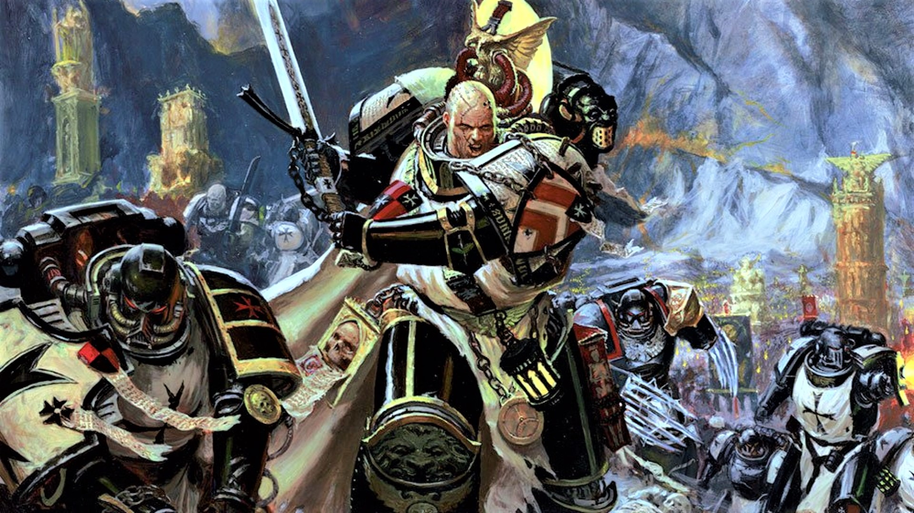
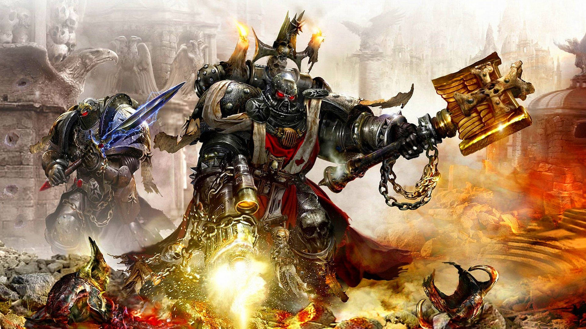

¡Bienvenido al mundo de Warhammer 40.000!
Blog por Augusto fabián Alice, posteado el 26/5/2025.
ROGAL DORN

Rogal Dorn, primarca de los puños imperiales e hijo del emperador de la humanidad. Dorn es un guerrero del mas alto nivel; estoico y pragmático.
Leer másPUÑOS IMPERIALES

Los puños imperiales, la séptima Legion de los marines espaciales, y ahora un capítulo de primer fundación. Expertos en asedios, tanto en defensa como en ataque, este capítulo es para cualquiera amante de el fuego pesado y las tácticas.
Leer másTEMPLARIOS NEGROS
Los templarios negros son luchadores feroces, inparables y fervientes en su creencia hacia la divinidad del emperador de la humanidad. Amantes del combate cuerpo a cuerpo, son excelentes duelistas.
Leer másALTO CAPELLÁN MEREK GRIMALDUS
El alto capellán Merek Grimaldus es un gran líder, estratega y fuente de inspiración para cualquier ser humano o trans-humano.
Leer másLOS TEMPLARIOS DEL MARTIRIO

Los templarios del martirio son un sucesor de los puños imperiales de la 4ta fundación. Un capítulo de flota, realizan cruzadas a través de las estrellas en busca de aquellos dignos de su patrimonio. Se especializan en la guerra de asedios, y mientras mas luchan mas resisten; Aunque dependiendo de su rol en el campo de batalla pueden ser tan defensivos con los puños carmesíes, tan celosos como los templarios negros, tan tácticos como los retribuidores y tan agresivos como los hospitalarios.
Leer más